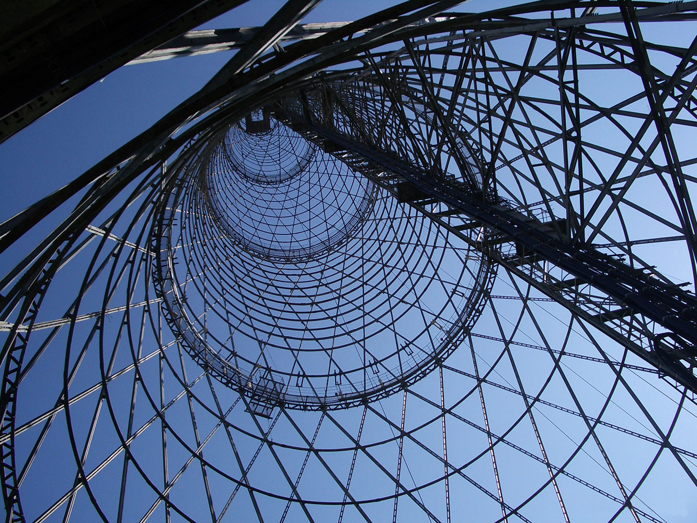
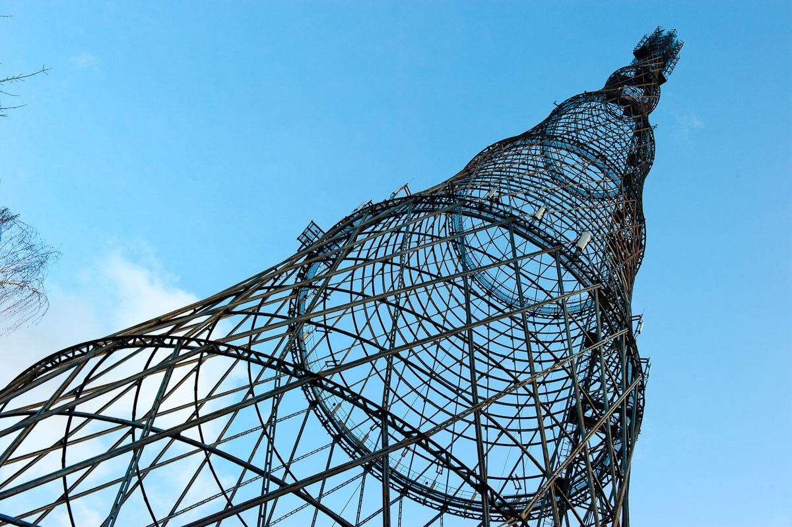

Владимир Шухов
1920—1922 гг
В 1890-е годы Владимир Шухов изобрел первые в мире гиперболоидные конструкции и металлические сетчатые оболочки строительных конструкций: эта идея была позаимствована из структуры плетёных крестьянских корзин. В книге «Стропила» 1897 года он доказал, что треугольная форма на 20-25 % тяжелее арочной с лучевой решёткой. После этого Шухов оформил ряд патентов на сетчатые покрытия и ажурную башню. Разрабатывая новые конструкции, архитектор стремился не только достичь большей прочности и жёсткости конструкции, но и также лёгкости и простоты за счёт использования как можно меньшего количество строительного материала.
Одной из сетчатых конструкций в форме гиперболоида вращения стала радиоантенная башня на Шаболовке. Построенная в 1914 году Ходынская радиостанция уже не справлялась с растущим объёмом радиограмм. 30 июля 1919 года Владимир Ленин подписал постановление Совета рабочей и крестьянской обороны, в котором содержалось требование «установить в чрезвычайно срочном порядке в г.Москве радиостанцию, оборудованную приборами и машинами наиболее совершенными и обладающими мощностью», достаточной для обеспечения безопасности страны и постоянной связи с республиками. Сразу же началось проектирование башни под эти цели. В результате проведённого конкурса заказ получила «Строительная контора» Шухова.
Башня составлена из шести секций, расположенных одна над другой. Каждая секция представляет собой самостоятельный гиперболоид, опирающийся на нижестоящий побольше. Монтаж каждой секции проводился внутри контура и поднимался на заданную высоту. Для того, чтобы основание секции прошло, нижний диаметр стягивался, а после протягивания в установленную секцию ослаблялся, стыковался и монтировался. Изначальный проект подразумевал, что несущие рёбра, находящиеся в вертикальных сечениях башни, будут соприкасаться с воображаемой поверхностью гиперболоида только в узловых точках, расположенных на горизонтальных поясах гиперболоида. Нижнее опорное кольцо прикреплено к фундаменту анкерными болтами с двух сторон от узловых опорных фасонок.